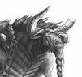

Les Terres de Kirin Tor
KameChan
Points : 2

Joué par :
[ Information masquée ]
Age : 22
Lieu de naisance : Thunder Bluff
Signe de naissance : Relativement Lent
Sexe : Homme
Race : Tauren
Faction : Horde
Formation : Chaman
Niveau : 22
Guilde :
Artisanat 1 : Dépeceur
Artisanat 2 : Artisant du cuir
Informations hrp : La plupart du temps au coter de sa compagne démoniste, kamechan evolue dans les larges terres arides de la horde à la recherche de nouvelles découvertes et rencontres .
Description : Kamechan est né dans la capitale de sa propre "race Tauren".
Très vite le village entier se rendu compte qu'il avait certaines difficulté à déplacer sa masse sur de longue distance. Après un bref apprentissage, il appris à courir de façons plus légères après avoir appris à entrer en symbiose avec sa magie afin de pouvoir prendre l'apparence d'un loup fantôme.
Son nom KameChan qui signifie Tortue "Kame" Monsieur "Chan" n'est désormais plus qu'un lointain souvenir pour ce jeune chaman.

Huitième Ère [2]
Lune de la Force
Décade du Panda
Décade du Gorille
Décade de l'Ours
Lune d'Agilité
Décade du Tigre
Décade du Singe
Décade du Faucon
Lune de l'Esprit [2]
Décade de la Chouette
Décade de la Baleine [1]
A la recherche de la purification
Tandis que j'affrontais un terrible lézard tonnerre, je me sentis revigoré de toute mon énergie lors de sa mort. Je compris alors immédiatement ce qu'il m'arrivais. J'avais enfin assez de sagesse pour pouvoir apprendre le fameux totem d'eau. Celui même qui me permettrais de soigner mes compagnons et moi même. Je partis dès lors pour Ogrimar afin d'aller consulter mon maître.
A mon arrivé, il s'empressa de m'envoyer dans la petite ville côtière de Cabestan afin d'aller y trouver Islen Waterseer afin que je puisse l'aider à accomplir une tache de la plus haute importance. Après un bref trajet, je fis la rencontre de Islen Waterseer qui m'envoya rencontrer brine, qui l'assistait dans l'analyse des eaux.
Peu de temps après ma rencontre avec Brine, je compris l'importance de la mission qui allait mettre confié. Analysé les eaux du moulin des Tarrens puis celle des ruines dans la région d'ashenvale.
Aussitôt mes analyses terminées, Brine me renvoya vers Islen Waterseer afin de lui rendre compte de mes découvertes.
Islen me vit arriver encore plus puissant et me confia la lourde tache d'invoquer puis de vaincre un esprit élémentaire d'eau corrompue.
Lors de mon arrivé derrière le village du sépulcre au sud de la Fossoyeuse, je vis l'autel que Islen m'avait envoyé trouver. Je but alors immédiatement la potion que Islen m'avait confiée.
Tout à coup, je vis apparaître une dizaine d'esprit d'eau, mais un seul se mit à m'attaquer.
Celui-ci était bien plus résistant que moi et les coups qu'il me portait était très dur à éviter.
Après un lourd combat, je pus récupérer le bracelet de cet élémentaire. Afin d'aller les rendre à Islen. A mon arrivé, Islen et Brine étaient réunies et attendaient mon retour. A ce moment précis, je s'avais que j'étais glorieux et j'attendais avec impatience cette récompense tant désirée, LE TOTEM D'EAU.
Fatigué de cette longue quête a travers nos terres, je pris la route vers le camp Tajano afin de me reposer chez mon ami l'aubergiste.
Décade du Lapin [1]
affrontement de taille
Tout commença lors de mon arrivé au goulet des chanteguerres.
C'était un de ces soirs ou l'on sent que de lourds combats sont en perspectives.
Je rejoignais neuf de mes compagnons devant une grille qui semblait mener vers un sous bois particulièrement dégagé et ou l'on serait visible de tous.
La grille se mit à vibrer puis à ce lever à une certaine vitesse malgré son lourd poids.
A ce moment précis tout mes compagnons se sont empressés de courir vers ce même sous bois qui ne m'inspirais que douleur et mort.
Une fois sortie, rien ne se passa et personne n'était en vue.
Arrivé au milieu de ce sous bois, un cri de douleur retentit soudain derrière moi.
A ce moment précis, je sentis l'embuscade de la part de ces gens que l'on appelle vulgairement « les allianceux » . Je vis alors un des mes frères Tauren ensanglanté tomber devant à mes pieds. Juste deriere lui un voleur gnome ricanais en me voyant.
C'est à ce moment que je me mis dans une rage qui ne m'avait encore jamais habitée. Je mit un coup qui refroidi le voleur puis, je déploya tous mes totems au sol. Malgré cela le bougre résistais de façons étonnantes au coup que je pouvais lui infliger. Je vis alors sa lame arrivée juste devant mes yeux et puis plus rien. Une sorte de vide dans mon esprit.
Lors de mon réveil, j'étais en compagnie de ma bien aimée Kitsuyu. Elle soignait mes blessures avec soin et me dit : « Pourquoi as tu voulus te mesurer avec un voleur si fort ? »
Alors je me mis à réfléchir et je songeais à sa question.
Mais bon sang ces biens sur !!
Ce Gnome était quasiment deux fois plus fort que moi ainsi que tous les compagnons qui m'entouraient à ce moment. Je me rendis compte que je n'aurai pas du aller si tôt combattre les forces ennemies.
Durant cette journée je compris à quel point la vie pouvait être courte mais aussi a quel point l'amour de ma compagne pouvait me réconforter dans ma honte.